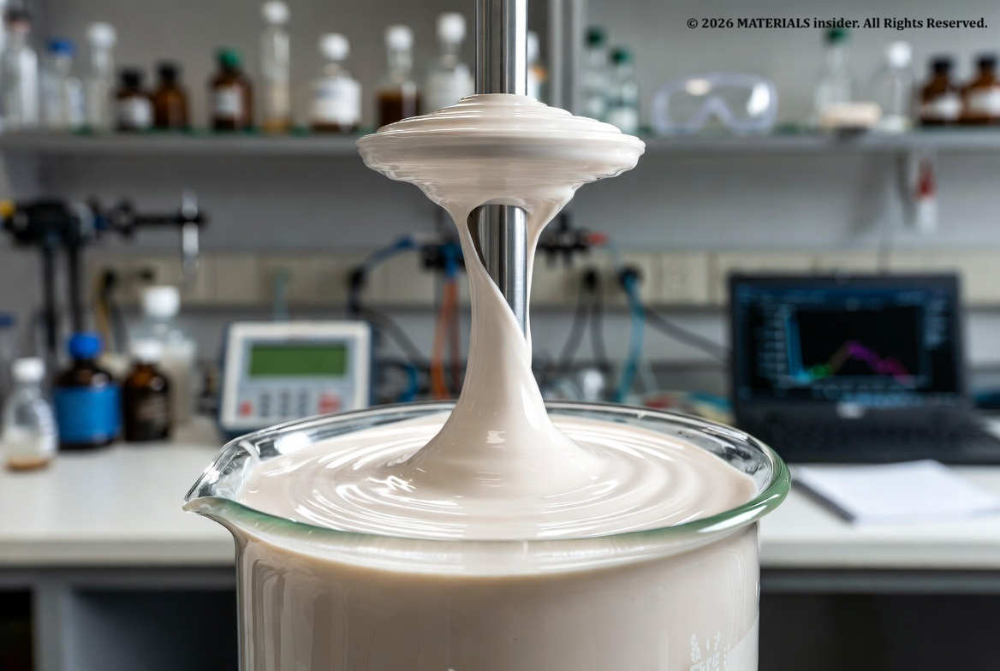
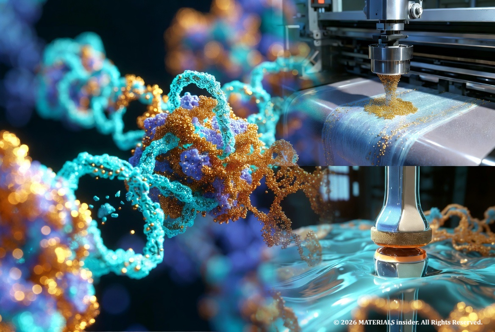
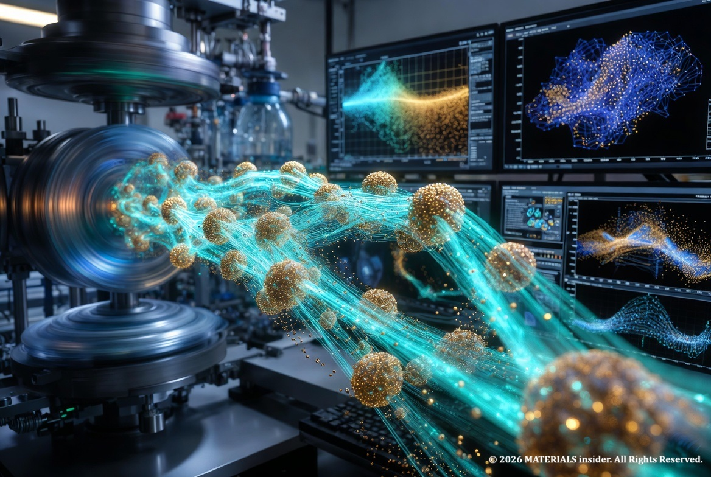

Rheopectic Fluids: Time-Dependent Thickening Under Stress
While many non-Newtonian fluids grab headlines for instant transformations—like oobleck hardening on impact—rheopectic fluids (also called rheopectic or anti-thixotropic) offer a subtler, time-dependent drama. These rare materials gradually increase in viscosity (become thicker) the longer they experience sustained shear stress. Unlike instantaneous shear-thickening (dilatant) behavior, rheopecty requires prolonged agitation: the more you stir or shake (within limits), the more resistant to flow the fluid becomes.

This contrasts with the far more common thixotropic fluids (e.g., paint or yogurt), which thin out over time under constant shear as structures break down. Rheopectic fluids build up structure instead.
Real-World Examples:
- Whipped cream or certain dairy products: Prolonged beating aligns fats and proteins, thickening it into peaks.
- Printer inks and some lubricants: Designed to thicken under printing shear for better control.
- Gypsum pastes and certain clay suspensions: Used in construction or industrial processes.
- Synovial fluid in human joints: Provides lubrication that adapts under sustained movement.
True rheopectic behavior is uncommon and often appears in complex colloidal or polymeric systems rather than simple household mixtures.

Atomic and Molecular Mechanisms:
At the atomic/molecular level, rheopecty stems from dynamic microstructural rearrangements driven by intermolecular forces and particle interactions under sustained shear. Unlike equilibrium Newtonian fluids, these systems are out of equilibrium; shear supplies energy that promotes ordering or bonding.
Key processes:
- Particle alignment and aggregation: In suspensions (e.g., gypsum or clays), plate-like or irregular particles tumble randomly at rest. Sustained shear aligns them or brings them into repeated contact. This allows weak forces—van der Waals attractions , electrostatic interactions, or hydrogen bonding—to form larger clusters, networks, or "hydroclusters." Over time, these grow, trapping solvent and increasing resistance to flow.
- Polymer or macromolecule entanglement and induced structuring: In solutions with long-chain molecules (e.g., certain inks or creams), shear stretches chains and increases collision frequency. This can promote temporary cross-links, crystallization nuclei, or fibril formation via hydrophobic interactions or ionic bridges. The longer the shear, the more extensive the network—raising effective viscosity. Hydrogen bonds and dipole-dipole forces play key roles in stabilizing these assemblies.
- Colloidal forces balance: Shear disrupts solvation layers or lubrication films initially but, with time, enables attractive forces to dominate. In some cases, shear-induced desorption of stabilizers or exposure of binding sites leads to flocculation. Atomic-level vibrations and Brownian motion compete with these effects; sustained energy input tips the balance toward buildup.
These changes are often reversible: when shear stops, thermal motion and relaxation slowly dismantle the structures, returning the fluid toward its original state (though full recovery can take time).

Rheopecty is rarer because most systems tend toward breakdown (thixotropy) under shear—energy input usually disrupts weak bonds first. Building structure requires specific chemistries where shear actively favors assembly, such as in systems with shear-activated bonding or jamming transitions that evolve slowly.
Applications and Importance:
Rheopectic fluids are valuable in controlled thickening scenarios: industrial mixing, coatings that stabilize after application, or biomedical lubricants that adapt to movement. Understanding them at the atomic scale aids in designing smart materials, from adaptive inks to joint replacements.
Research continues with advanced rheometers, microscopy, and simulations to map exact force networks and molecular dynamics. While less flashy than dilatant fluids, rheopectic materials highlight how time, force, and nanoscale interactions create tunable macroscopic behavior—core to modern materials science.
Share this article: